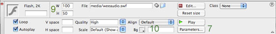
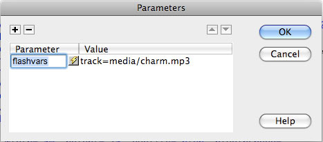

Using the flash audio player.
This is a minimal flash audio player which allows you to pass it an audio file from within the HTML.
It looks like this:
Setup
- Place the "weeaudio.swf" into your media folder.
- Place your sound file into your audio folder.
- In Dreamweaver, from the top bar, go to Insert > Media > Flash.
- From the 'Select File' dialogue which appears, pick 'weeaudio.swf'.
- Dreamweaver will add loads of code to your page:
It also adds a link to an external script to your header. When you next save, it will add this script into your current site folder.
- Place your cursor into the lower half of the code (from after the <noscript> tag), and click the "Refresh" button in the bottom panel.

- Click the 'Parameters...' button.
- In the dialogue box which pops up, add a new parameter with the parameter name of 'flashvars' and a value of 'track=audio/sound.mp3'. (Replace 'sound.mp3' with the name of your audio file).

- You can resize the buttons by editing the W & H parameters (100 x 50 by default).
- You can change the background colour using the Bg color picker. The buttons will take on some of the colour chosen.
Examples